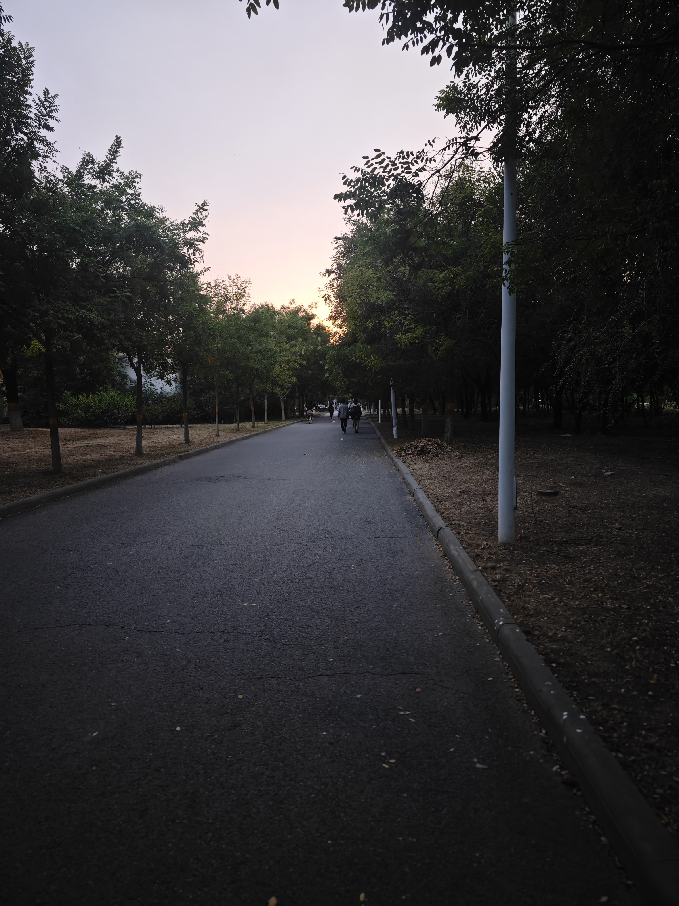
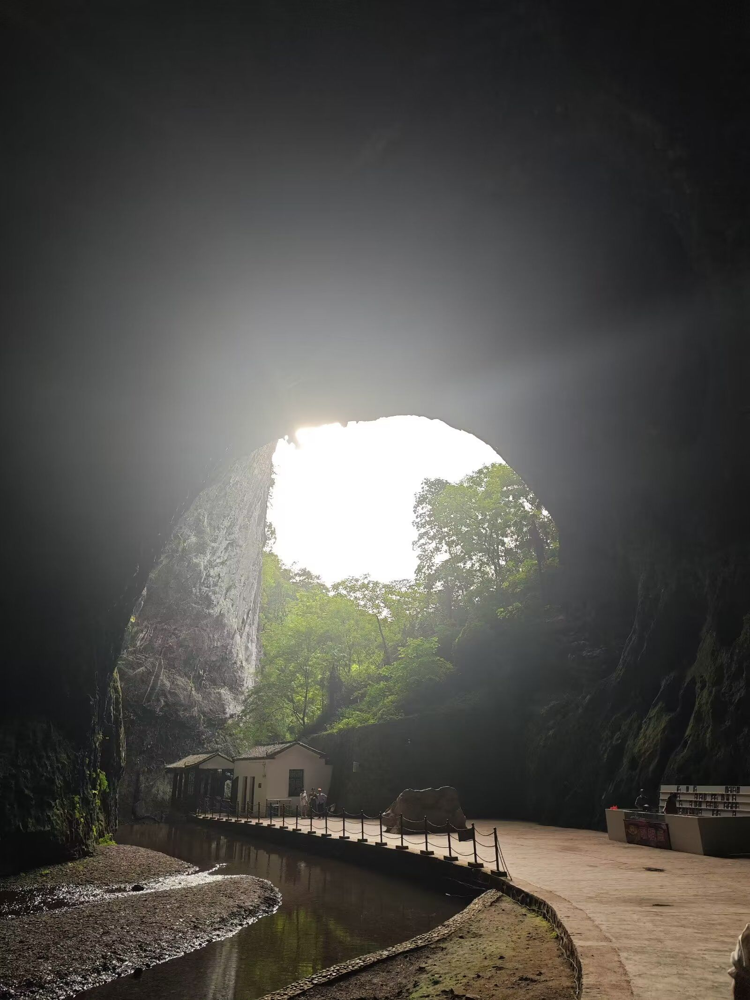

怎样度过这一生
青木下黄土旧叶，落日里长路新人。

2023年9月28日
天下第一洞
当初无意间拍到的，后来每每一看
真的绝了

2023年9月29日
无耻之徒
这部美剧真的太绝了
在第四季的最后，这一幕，真的物是人非。
从一开始的不理解，以及各种各样的奇葩
到最后的窥探出，这部剧到底想表达出什么
以及不同的观众生活在不同的环境中他们能够获得什么
这似乎是人活一生，每个人都会思考的各种问题

2023年11月2日
《人世间》观后感
穷不怪父
孝不比兄
苦不责妻
气不凶子
一生向阳
2024年3月6日22点44分
写给今年夏天即将参加中考的妹妹
今朝盛夏，心念着你即将参加中考，十余载求学，许多不容易
教育如养育花木，日出浇水，日落收花，数月才稍有变化
提笔欲写些许繁文，却苦于胸中无半分墨水，难书锦绣文章
如同人生百味，欲诉说，难以言表
努力不一定有回报
不努力也有可能有回报
决定权于你之手
忽魂悸以魄动，恍惊起而长嗟。
惟觉时之枕席，失向来之烟霞。
这是时间给予的回报
愿在中考之际，如同马生序中的文士，笔下留情，从容淡定
用你所学去书写属于你自己的篇章
结果如何，不必纠结
当时挂念心头重，岁久风轻过耳旁。
2024年3月11日点40分
《英雄联盟：双城之战》
迄今为止看过最好看的，最具有艺术感的，也是最完美的。
2024年11月17日14点07分
上岸吧😭
今天吃完饭，走下食堂的楼梯的时候突然发现这条路真的走了无数次
昨天，今天，明天也会如期。
一股疲惫感瞬间打开，我是有如此多的想干的事情
但是又不得不先把目前这条路走完
今年我说的话还没有我写道网页上的字多，哈哈哈
我以前一直以为自己就是超人，什么病痛，压力，不存在的
直到这几年开始，冬天早上已经不敢洗头了，怕冷
也不敢吃辣条了，吃到辣条的第一口就知道自己会拉肚子，怕
也不敢蹦蹦跳跳了，下楼梯都是一步一步老老实实跟着别人屁股后面
也成为了自己以前觉得很尴尬的人，和别人说话，无论怎么样都喜欢傻笑
好多好多好多，下个月21号，是我的生日，也是考研的第一天
有时候真的好想和初中下晚自习一样，在操场大叫，去狠狠跑几圈
甚至连这些动作在我目前看，都是幼稚的不可一世，我变的很多很多
我甚至会对着以前自己在本子上写的归来仍是少年感到深深羞耻
啊啊啊啊啊啊啊啊啊啊啊啊啊啊啊啊啊啊啊
2024年11月23日19点42分
在新学校的第二周
刚来的几天很不习惯
不喜欢这里的独卫，可能习惯了天津那种公共厕所，比较放心，而且味道在寝室也不大
身体不知道为什么也变差了许多
这次我没有离家很远的地方了
虽然也不近，这些年也算是走过了大江南北
少许的遗憾便是，没有完成我南北横跨的愿望吧
调剂到了一个自己也不知道是不是正确的地方读一个是不是正确的专业
时常想如果怎么样怎么样会不会我的人生便完全不一样，是不是会更好
或许这也是我这些年迟迟进步缓慢的原因
站在现在回想过去便会停下脚步
好在学校洗澡便宜，满足了我对于洗澡舒服的刚需
突然间有点后怕吧
我好像已经忘记了很多东西
还好我稍微记录了些，对于发生过的，不论是重要的，不重要的好像已经没什么感觉了
就像现在的我对周围发生的“耿耿于怀”，可能两年后就忘记了
也就是说当下的情绪似乎就不算什么
除了给记录下来，让未来的自己知道他在人生的这一阶段是怎么样的
几乎没有任何作用
行吧，有些话痨，就这样
2025年9月19日17点19分
国庆开学第三天
昨天第一次去线下开组会并且吃了饭
有点抵触，不太习惯这种，包括敬酒这些
也不喝酒，明明喝完酒会难受，后遗症一大堆，还是那么多人向往
连续好多天下雨了
回想这几年也是，干旱到一学期不下几次到现在一学期晴不了几天
怎么样，我经历的也算是挺极端的了
我确实不适合读这研究生，不太喜欢
不像大学一样，有课就是任务，升学就业就是目标
其他时间自我管理，现在很多事情，但是总提不起干劲
偶尔能慰藉自己的便是那些小爱好，能够让自己觉得身处在以前
自己身上的动物本性随着年龄的增大越明显了
抵触未知环境，时时刻刻想逃离，在这种地方身上总会觉得病痛下一秒将至
习惯一个地方以后就会变得安逸不再拼搏
我感觉考研一志愿的失败带给我的比高考还要重，即便考研有一个学校上
但自己好像已经没有可以改变的机会了，没有再改变的力气了
哦哦，妈妈给了我几包茶叶挺好喝的，“肉桂”喝的是红茶的味道
很清香的味道，闻起来也是
就说这些吧
2025年10月12日14点33分